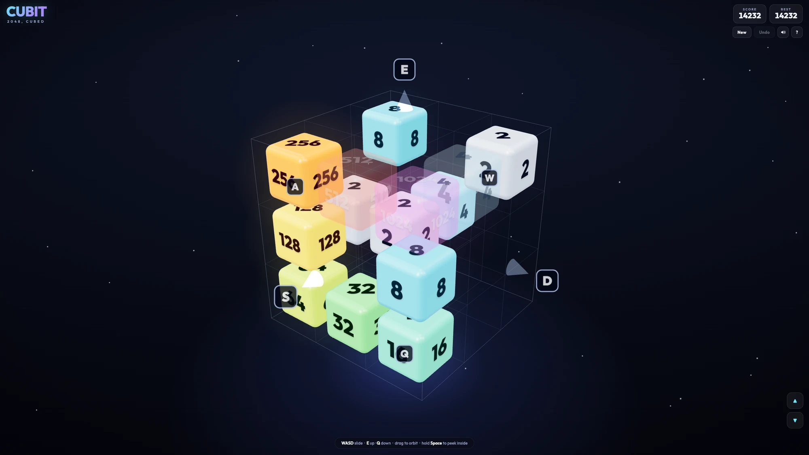

Constraint
Six directions must feel obvious on a flat phone screen, including the hidden axis and the cost of losing sight of interior tiles.
CASE / Game / interaction
2048, cubed: slide and merge inside a 3×3×3 cube, across six directions instead of four.

HOW IT HOLDS UP
The complete single-file engine, renderer, input and synthesized sound.
Six directions must feel obvious on a flat phone screen, including the hidden axis and the cost of losing sight of interior tiles.
Score swipes against screen-space projections of the lattice axes, make blocked tiles translucent, and reserve Space plus capped gyro tilt for peeking.
Live as one self-contained 553 KB HTML file with 62 tests; saves locally.
SELECTED PROOF
RECORDED STATES

KEEP READING